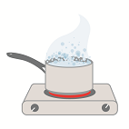
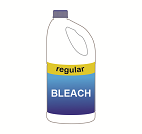
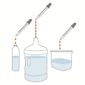
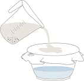

Emergency Disinfection of Drinking Water
In an emergency situation where regular water service has been interrupted – like a hurricane, flood, or water pipe breakage – local authorities may recommend using only bottled water, boiled water, or disinfected water until regular water service is restored. The instructions below show you how to boil and disinfect water to kill most disease-causing microorganisms that may be present in the water. However, boiling or disinfection will not destroy other contaminants, such as heavy metals, salts, and most other chemicals.
Print Emergency Disinfection of Drinking Water document.
ONLY USE WATER THAT HAS BEEN PROPERLY DISINFECTED FOR DRINKING, COOKING, MAKING ANY PREPARED DRINK, WASHING DISHES AND FOR BRUSHING TEETH.

- Use bottled water or water you have properly prepared and stored as an emergency water supply.
- Boil water, if you do not have bottled water. Boiling is sufficient to kill pathogenic bacteria, viruses and protozoa (WHO, 2015).
- If water is cloudy, let it settle and filter it through a clean cloth, paperboiling water towel, or coffee filter.
- Bring water to a rolling boil for at least one minute. At altitudes above 5,000 feet (1,000 meters), boil water for three minutes.
Let water cool naturally and store it in clean containers with covers.

- To improve the flat taste of boiled water, add one pinch of salt to each quart or liter of water, or pour the water from one clean container to another several times.
- Disinfect water using household bleach, if you can’t boil water. Only use regular, unscented chlorine bleach products that are suitable for disinfection and sanitization as indicated on the label. The label may say that the active ingredient contains 6 or 8.25% of sodium hypochlorite. Do not use scented, color safe, or bleaches with added cleaners.If water is cloudy, let it settle and filter it through a clean cloth, paper towel, or coffee filter.
- Locate a clean dropper from your medicine cabinet or emergency supply kit.
- Locate a fresh liquid chlorine bleach or liquid chlorine bleach that is stored at room temperatures for less than one year.
Use the table below as a guide to decide the amount of bleach you should add to the water, for example, 8 drops of 6% bleach, or 6 drops of 8.25% bleach, to each gallon of water. Double the amount of bleach if the water is cloudy, colored, or very cold.

- Stir and let stand for 30 minutes. The water should have a slight chlorine odor. If it doesn’t, repeat the dosage and let stand for another 15 minutes before use.
- If the chlorine taste is too strong, pour the water from one clean container to another and let it stand for a few hours before use.
| Volume of Water | Amount of 6% Bleach to Add* | Amount of 8.25% Bleach to Add* |
|---|---|---|
| 1 quart/liter | 2 drops | 2 drops |
| 1 gallon | 8 drops | 6 drops |
| 2 gallons | 16 drops (1/4 tsp) | 12 drops (1/8 teaspoon) |
| 4 gallons | 1/3 teaspoon | 1/4 teaspoon |
| 8 gallons | 2/3 teaspoon | 1/2 teaspoon |
*Bleach may contain 6 or 8.25% sodium hypochlorite.
Additional Water Guidance
- Prepare and store an emergency water supply. Visit the Federal Emergency Management Agency (FEMA) Website for additional guidance on preparing and storing an emergency water supply.
Look for other sources of water in and around your home. Although bottled water is your best choice, you may be able to find other sources of water by melting ice cubes or draining your hot water tank or pipes. You can also use river or lake water. It is generally better to use flowing water than still, stagnant water. However, do not use water with floating material in it or water that has a dark color or questionable odor. Regardless of the source, treat the water by following the instructions on the main page above. If you have a well on your property that has been flooded, make sure to disinfect and test the well water after the flood. Contact your state or local health department for advice or review our "What to do With Your Private Well After a Flood" document.

- Consider how the water looks and how to filter it if needed. Disinfection does not work as well when water is cloudy or colored. If water is cloudy, let it settle. Then filter the water through a clean cloth, paper towel, or coffee filter. Store the settled and filtered water in clean containers with covers.
Other Disinfection Methods
If you don’t have liquid bleach, you can use one of the other disinfection methods described below.
- Granular calcium hypochlorite. The first step is to make a chlorine solution that you will use to disinfect your water. For your safety, do it in a ventilated area and wear eye protection. Add one heaping teaspoon (approximately ¼ ounce) of high-test granular calcium hypochlorite (HTH) to two gallons of water and stir until the particles have dissolved. The mixture will produce a chlorine solution of approximately 500 milligrams per liter. To disinfect water, add one part of the chlorine solution to each 100 parts of water you are treating. This is about the same as adding 1 pint (16 ounces) of the chlorine solution to 12.5 gallons of water. If the chlorine taste is too strong, pour the water from one clean container to another and let it stand for a few hours before use. CAUTION: HTH is a very powerful oxidant. Follow the instructions on the label for safe handling and storage of this chemical.
- Common household iodine (or “tincture of iodine”). You may have iodine in your medicine cabinet or first aid kit. Add five drops of 2% tincture of iodine to each quart or liter of water that you are disinfecting. If the water is cloudy or colored, add 10 drops of iodine. Stir and let the water stand for at least 30 minutes before use.
- Water disinfection tablets. You can disinfect water with tablets that contain chlorine, iodine, chlorine dioxide, or other disinfecting agents. These tablets are available online or at pharmacies and sporting goods stores. Follow the instructions on the product label as each product may have a different strength.